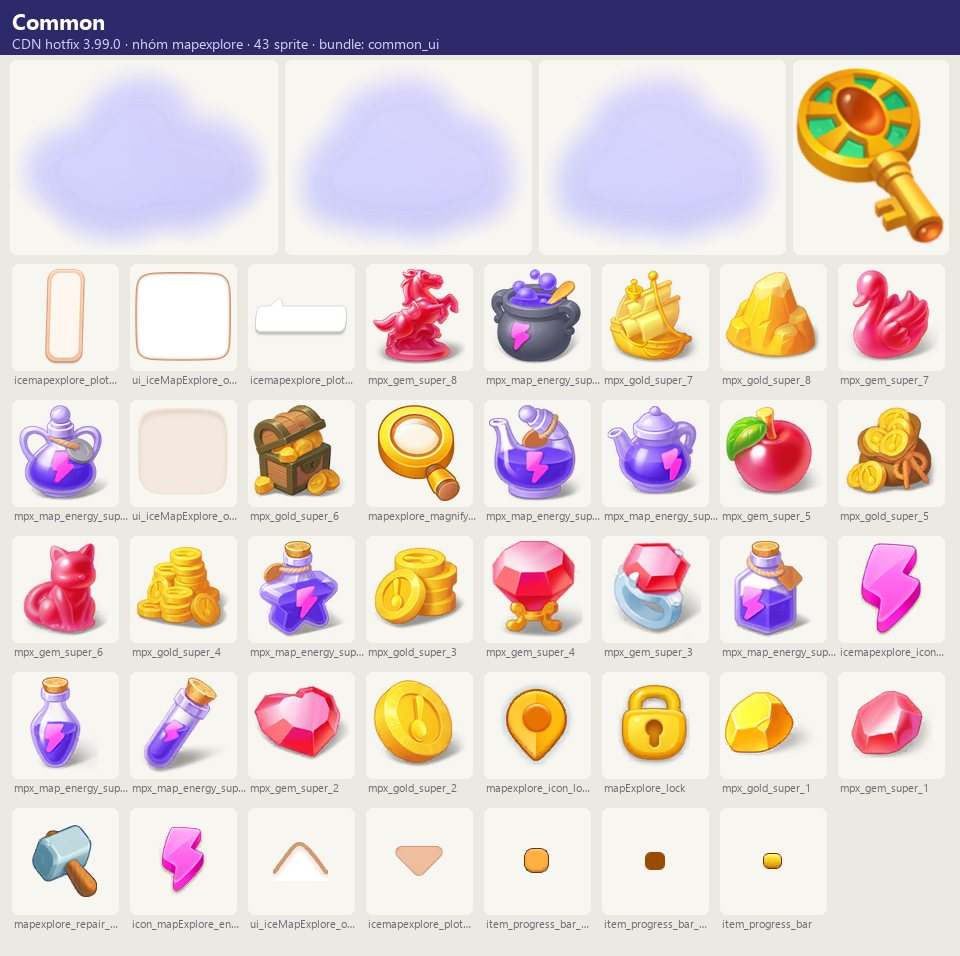
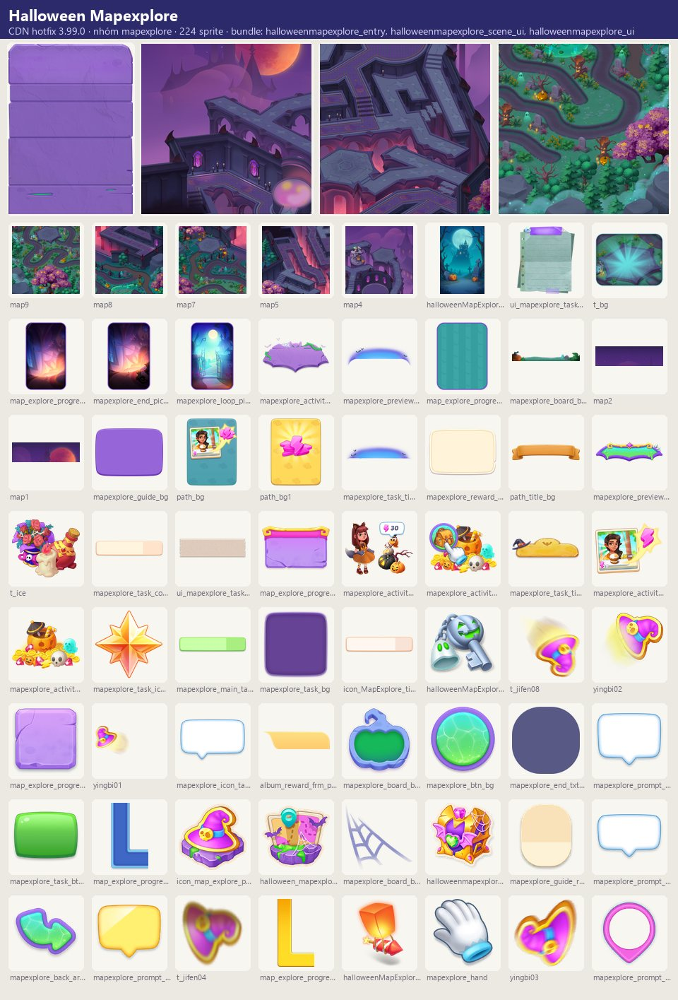
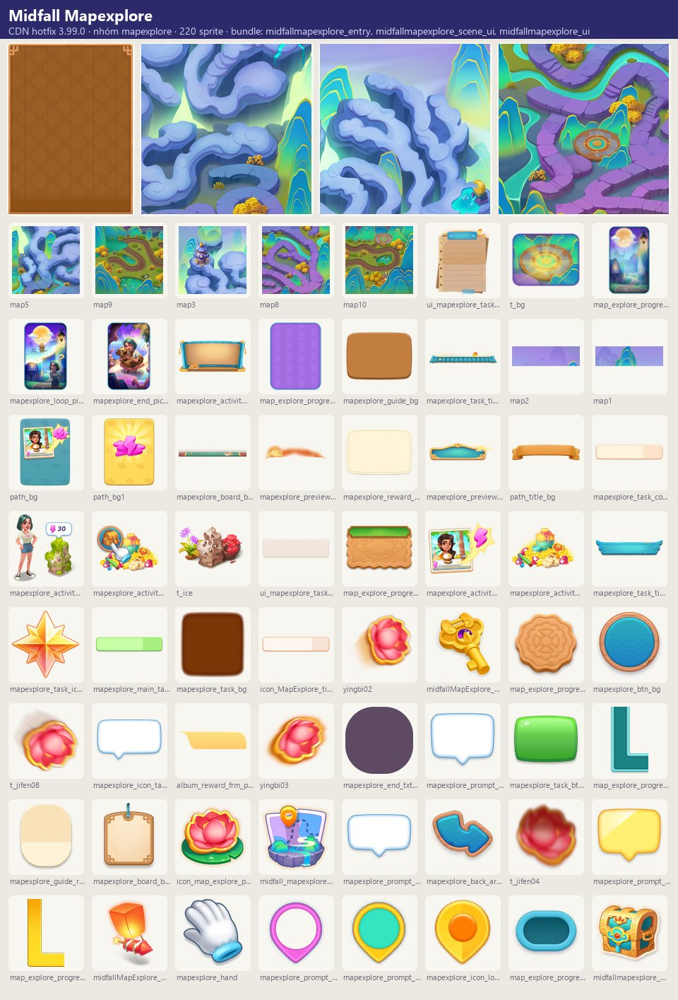
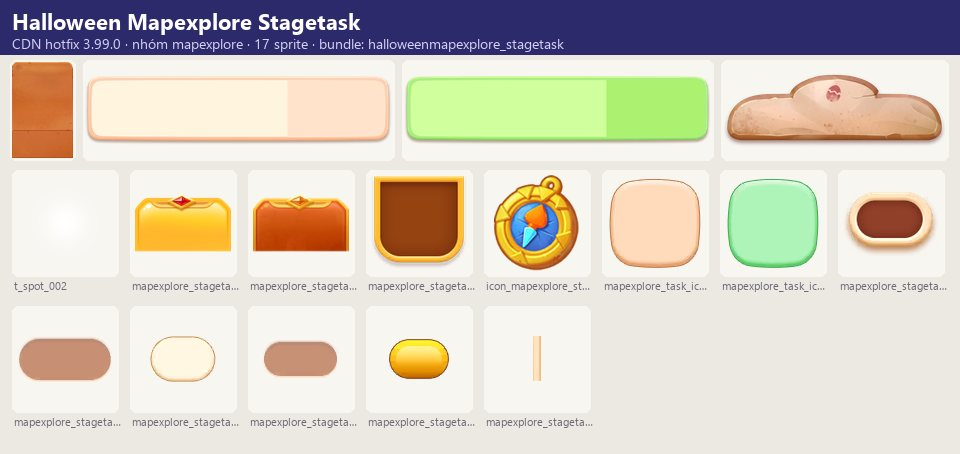
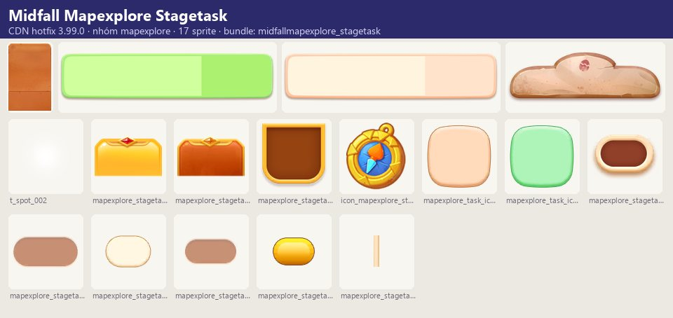
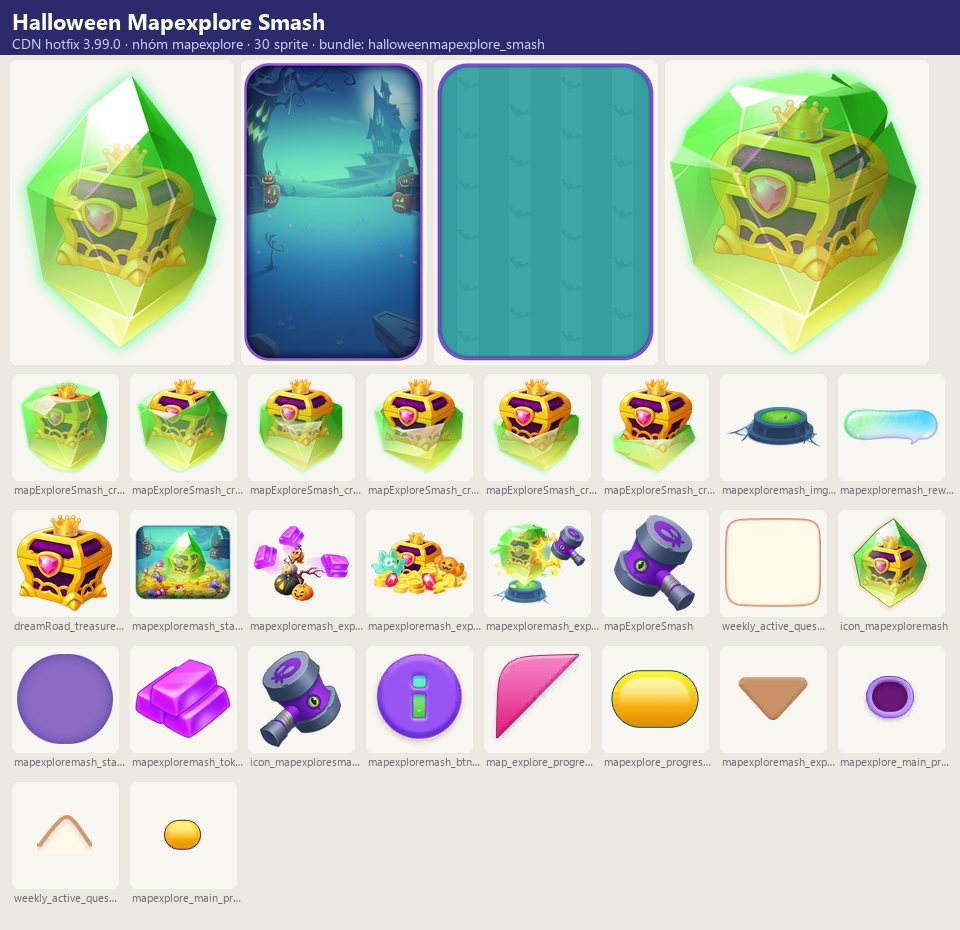
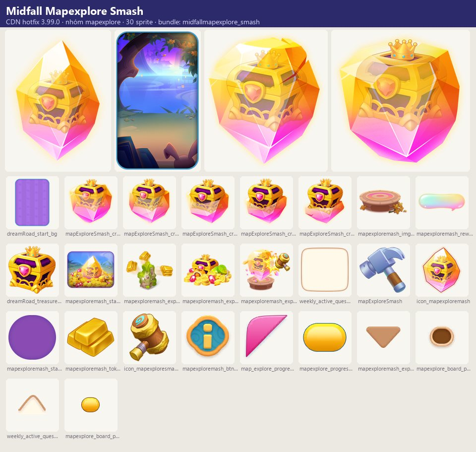

Tài nguyên hình ảnh
Map Explore là sự kiện theo mùa trên một bản đồ riêng (vd. 'Quinn's Mid-Autumn Mystery', Halloween 'The Cat in the Castle', biến thể Mermaid).
Mô tả
- Map Explore là sự kiện theo mùa trên một bản đồ riêng (vd. 'Quinn's Mid-Autumn Mystery', Halloween 'The Cat in the Castle', biến thể Mermaid).
- Người chơi dùng năng lượng sự kiện (icon_explore_mapEnergy, kiếm từ giao đơn ở bảng chính hoặc mua bằng gem) để dọn chướng ngại trên bản đồ, đi theo chuỗi nhiệm vụ cốt truyện (main task) và nhiệm vụ bong bóng, thu sao khám phá, pha lê, kho báu và mở cửa kho báu.
- Có 'ba lô' là bảng merge nhỏ để mở Quest Journal, sổ nhiệm vụ theo giai đoạn (Explorer's Journal, Stage{0}) và mini-game đập pha lê (Crystal Cache) tiêu năng lượng đổi điểm.
- Hoàn thành mọi nhiệm vụ nhận Grand Prize.
Còn thiếu / chưa xác minh
Mở khóa & điểm vào
Theo lịch sự kiện server và cấp người chơi; cần cập nhật bản app có nội dung chủ đề.
Điểm vào:
- <Theme>MapExploreBoardEntry trên bảng chính
- Biểu tượng sự kiện trên HUD
Cách hoạt động
- Vào sự kiện → tutorial (giao đơn để nhận năng lượng sự kiện; dùng năng lượng để dọn chướng ngại, làm nhiệm vụ; merge vật phẩm trong ba lô để nhận thêm thưởng).
- Bản đồ có nhiệm vụ chính tuần tự (Mission Control: 'Search for clues', 'Head deeper into the woods', … ~22–24 bước mỗi chủ đề) và nhiệm vụ bong bóng phụ.
- Mỗi lần dọn ô chướng ngại tốn năng lượng sự kiện; ô không với tới hiện 'Unreachable!'.
- Mục tiêu tổng: tìm Sam và thu đủ sao khám phá.
- Sổ Explorer's Journal chia Stage: xong mọi nhiệm vụ stage hiện tại mới mở stage sau.
- Hết năng lượng: 'Need more energy?' → giao đơn hoặc mua bằng gem (BuyTokenWindow).
- Vật phẩm thừa kéo vào ô xóa.
- Crystal Cache: tiêu năng lượng tích điểm, đủ điểm đập pha lê nhận Lucky Drop / Crystal Cleared.
- Biến thể Mermaid có thanh 'Travel Supplies' tích token từ việc dọn chướng ngại.
- Hết sự kiện: EndWindow.
Luồng chi tiết theo code
Vào sự kiện → tutorial (giao đơn để nhận năng lượng sự kiện; dùng năng lượng để dọn chướng ngại, làm nhiệm vụ; merge vật phẩm trong ba lô để nhận thêm thưởng). Bản đồ có nhiệm vụ chính tuần tự (Mission Control: 'Search for clues', 'Head deeper into the woods', … ~22–24 bước mỗi chủ đề) và nhiệm vụ bong bóng phụ. Mỗi lần dọn ô chướng ngại tốn năng lượng sự kiện; ô không với tới hiện 'Unreachable!'. Mục tiêu tổng: tìm Sam và thu đủ sao khám phá. Sổ Explorer's Journal chia Stage: xong mọi nhiệm vụ stage hiện tại mới mở stage sau. Hết năng lượng: 'Need more energy?' → giao đơn hoặc mua bằng gem (BuyTokenWindow). Vật phẩm thừa kéo vào ô xóa. Crystal Cache: tiêu năng lượng tích điểm, đủ điểm đập pha lê nhận Lucky Drop / Crystal Cleared. Biến thể Mermaid có thanh 'Travel Supplies' tích token từ việc dọn chướng ngại. Hết sự kiện: EndWindow.
Tài nguyên hình ảnh (7)
7 bảng sprite trích từ bundle sự kiện trên CDN hotfix 3.99.0 (mỗi bảng là một chủ đề/biến thể; sprite rời, không phải màn hình đã dựng). Bấm ảnh để phóng to; nhãn UC dẫn tới use case tương ứng.














Phần thưởng
Phần thưởng theo code
| Ngữ cảnh | Phần thưởng | Evidence |
|---|---|---|
| Hoàn thành tất cả | Grand Prize | mapExplore_tutorial_3_noboard |
Use case (7)
Bấm vào từng use case để mở. Mở/đóng tất cả
UC-01 Kiếm năng lượng sự kiện
Các bước- Giao đơn
- Nhận icon_explore_mapEnergy
| Actor | Player |
|---|---|
| Trigger | Giao đơn ở bảng chính |
| Điều kiện | Sự kiện chạy |
| Kết quả | Có năng lượng để khám phá |
| Quy tắc / số liệu | Buff 'Event Energy Plus' nhân đôi (order_buff_mapexplore_*) |
| Evidence | text mapExplore_tutorial_1, mapExplore_token_not_enough, order_buff_mapexplore_* |
UC-02 Dọn chướng ngại
Các bước- Tiêu năng lượng
- Ô mở, rơi vật phẩm/sao/pha lê
| Actor | Player |
|---|---|
| Trigger | Chạm ô chướng ngại |
| Điều kiện | Đủ năng lượng; ô với tới được |
| Kết quả | Tiến độ nhiệm vụ |
| Quy tắc / số liệu | Không với tới: 'Unreachable!' |
| Evidence | text mapExplore_tutorial_2, mapExplore_unreachable_tip, mapExplore_task_1..10 |
UC-03 Nhiệm vụ chính & bong bóng
Các bước- Làm main task theo thứ tự
- Làm bubble task phụ
| Actor | Player |
|---|---|
| Trigger | Theo cốt truyện sự kiện |
| Điều kiện | — |
| Kết quả | Thưởng từng bước, tiến tới Grand Prize |
| Quy tắc / số liệu | Midfall: 22 main task; Halloween: 24 |
| Evidence | text midfallMapExplore_main_task_*, halloweenMapExplore_main_task_*, *_bubble_task_* |
UC-04 Ba lô & Quest Journal
Các bước- Merge vật phẩm trong ba lô
- Mở khóa mục trong Quest Journal
| Actor | Player |
|---|---|
| Trigger | Nhặt vật phẩm vào ba lô |
| Điều kiện | — |
| Kết quả | Thưởng thêm |
| Quy tắc / số liệu | Kéo vật phẩm vào ô xóa để bỏ |
| Evidence | text mapExplore_task_eventBook*, mapExplore_tutorial_3, mapExplore_bubble_delete; prefab *BookWindow |
UC-05 Explorer's Journal theo stage
Các bước- Hoàn thành nhiệm vụ stage
- Claim
- Mở stage tiếp
| Actor | Player |
|---|---|
| Trigger | Mở sổ |
| Điều kiện | — |
| Kết quả | Thưởng stage |
| Quy tắc / số liệu | Stage chưa mở: mapExplore_stageTask_lock_tip |
| Evidence | text mapExplore_stageTask_*; prefab *ExtraStageTaskWindow |
UC-06 Mua năng lượng sự kiện
Các bước- 'Need more energy?'
- Mua bằng gem (BuyTokenWindow) hoặc quay về giao đơn (Return)
| Actor | Player |
|---|---|
| Trigger | Hết năng lượng |
| Điều kiện | — |
| Kết quả | Năng lượng sự kiện |
| Quy tắc / số liệu | — |
| Evidence | text mapExplore_want_more_*, mapExplore_stay_btn; prefab *BuyTokenWindow |
Cấu hình (4)
Gộp mọi nguồn: const trong code, JSON mặc định trong Resources, bảng static, storage key, AB test, cờ server.
| Nguồn | Key | Kiểu | Giá trị | Ý nghĩa | Nơi định nghĩa |
|---|---|---|---|---|---|
| asset | Chủ đề trong APK | list | midfall (Mid-Autumn), halloween, mermaid (văn bản) | UIPrefabConfig MapExploreActivity/* (halloween 76 prefab, midfall 74) | |
| asset | Loại nhiệm vụ | list | Clear obstacles, Collect Quartz/Amethyst crystals, Collect treasures, Open all the treasure doors, Collect items, Open the treasure area, Unlock all the items in the Quest Journal | mapExplore_task_* | |
| CDN hotfix 3.99.0 (catalog Addressables + bundle) | Biến thể chủ đề — nhóm mapexplore | list | 6: Halloween Mapexplore, Halloween Mapexplore Smash, Halloween Mapexplore Stagetask, Midfall Mapexplore, Midfall Mapexplore Smash, Midfall Mapexplore Stagetask | Skin/biến thể có bundle trên CDN; server chọn skin nào chạy | facts/runtime/decoded/cdn_themes.json |
| mã Lua giải mã (phân tích sâu, đã kiểm chứng) | Theo mã Lua (1) | note | Chi phí chướng ngại là config client: đường chính midfall tốn 5.638 mapEnergy, cả bản đồ 11.404. Mua mapEnergy theo bậc gem, không giới hạn số lần, reset 00:00 UTC. Bắt đầu được tặng 10 mapEnergy; mapEnergy thừa đổi coin 1:1, tối đa 100. Travel Supplies, Crystal Cache và Explorer's Journal chỉ chạy khi server gửi config. | ExploreObstacleModelConfig_midfallmapexplore.json; MapExploreActivityModel.GetBuyTokenPrice dòng 221-233; _OnStateChanged dòng 395-396; ExchangeReward dòng 685-690 |
Giao diện (UI)
| Element | Class | Mục đích |
|---|---|---|
| Bản đồ sự kiện | MapExploreActivity/<Theme>MapExploreBoardWindow | |
| Mua năng lượng | <Theme>MapExploreBuyTokenWindow |
Storage keys
activity
Chưa đọc được / ghi chú
- Bố cục bản đồ, chi phí năng lượng mỗi ô, thưởng từng nhiệm vụ do bundle/server
Tính năng liên quan
Đơn hàng & khách Khung sự kiện chung Bundles (OnePlusFourMapExplore)
Nguồn đã đọc
- notes/packs/MapExploreEvents.md
- facts/runtime/cdn_png/index.json + screens/cdn_shots.json (bundle sự kiện CDN)
- analysis/sale-event-deep.md
- facts/lua/src (Lua giải mã)